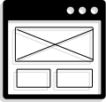

- Analisi euristica
- Analisi di mercato
- Benchmarck
- Personas
- Customer journey
- Empathy map
- Wireframe
- User Flow
- Design system
- Disegnare interfacce accessibili
- Produzione di prototipi interattivi

Sono Stefania. Le mie competenze sono un connubio di creatività e organizzazione, sostenute da una determinazione e ambizione incessanti che mi spingono costantemente verso soluzioni complete e coerenti. Costantemente affino le mie abilità nel problem solving. La chiarezza della mia visione si combina con un'attenta gestione dei dettagli, garantendomi di essere un professionista affidabile e degno di fiducia.
Grazie al percorso di studio di Start2impact, ho ricevuto un'ottima formazione non solo nell'ambito dell'UX e UI design, ma anche nella conoscenza di figure lavorative trasversali. Questo mi ha preparato ad affrontare situazioni lavorative in cui collaborerò con persone provenienti da diverse aree professionali. Inoltre, grazie all'approccio pratico e al supporto dei tutor del percorso di studio, ho avuto la possibilità di mettere in pratica le competenze acquisite lavorando su progetti reali. Questo mi ha permesso di sviluppare le capacità necessarie per affrontare sfide concrete e risolvere problemi complessi.